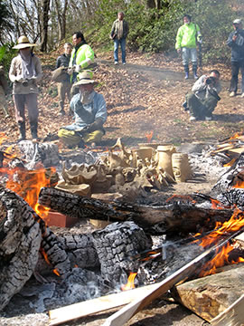
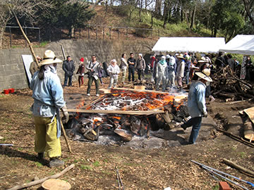
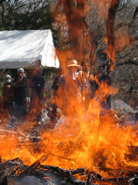
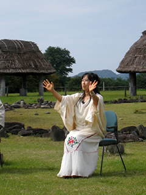
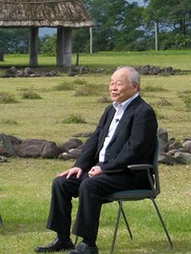
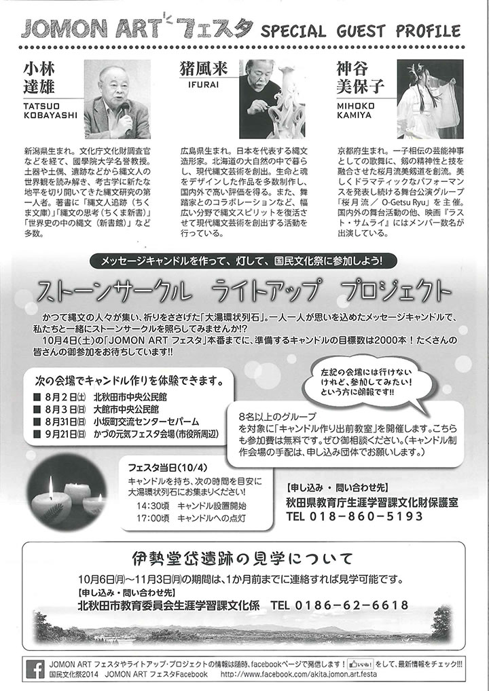
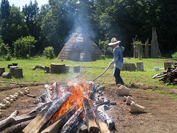

― イベント報告 ―
-
■第２０回 春の縄文野焼き祭り（平成２７年度）
【開催日】２０１５年４月２６日（日） -
■福山で猪風来講演会！
【開催日】２０１５年３月２２日（日）
【会 場】福山市市民参画センター（広島県福山市本町１－３５） -
■東京町田ひなた村に“縄文の炎”たちのぼる
【開催日】２０１５年２月２８日（土）
【会 場】東京都町田市青少年施設ひなた村 -
■ARTs of JOMON in TOKYO
【期 間】２０１５年１月４日（日）～１月１８日（日）
【会 場】東京都港区南青山 表参道Spiral Garden -
■第4回 Art Nuova展（アート・ヌーヴァ・2015）に村上原野が出品
【期 間】２０１５年１月６日（火）～１月１１日（日）
【場 所】岡山県天神山文化プラザ第５展示室 -
■猪風来、岡山大学で講演『縄文スピリットから始まる新しい創造』
【日 時】２０１４年１２月１８日（木）１４：３０～１６：３０
【場 所】岡山大学附属図書館中央図書館１階 ラーニングコモンズ -
■第29回国民文化祭・あきた2014【ＪＯＭＯＮ ＡＲＴフェスタ】にて猪風来ら特別鼎談
【日 時】２０１４年１０月５日（日）午前１０：００～１２：００ -
■芸術新潮 現代の縄文土器を野で焼く『猪風来の豊饒世界』
【掲載号】「芸術新潮」２０１４年７月号 -
■日本初の快挙！ 国宝「中空土偶」漆塗装技法と縄文ベンガラ技法の解明
―“縄文の赤”の美をはじめて再現―
【函館市縄文文化交流センターの公式ページで論文公開】
【研究成果の公開展示】２０１４年５月２０日（火）～６月８日（日） -
■ARTs of JOMON in AOMORI に猪風来作品『縄文山河』『ウフィカムイ』など展示！
【会 場】青森県立美術館コミュニティーギャラリー
【期 間】２０１４年２月１４日（金）～２月２３日（日） -
■別冊太陽『縄文の力』 「縄文の美の発見者たち」猪風来
【掲載号】「縄文の力（別冊太陽 日本のこころ 212）」２０１３年１０月 -
■「縄文の造形美に迫る！」縄文アーティスト猪風来と考古学者小林達雄氏の対談
【掲載号】JR東日本発行『トランヴェール』２０１３年５月号 -
■北の縄文道民会議シンポジウム－猪風来講演と対談
【日 時】２０１３年３月２日（土）午後２時～５時
【会 場】札幌国際ビル８階 国際ホール（札幌市中央区北４条西４丁目） -
■猪風来 ＮＨＫ日曜美術館『土偶 命の息吹から生まれたアート』に出演！
【放送日】ＮＨＫ Ｅテレ １０月１４日（日）午前９時～９時４５分
【再放送】 １０月２１日（日）午後８時～８時４５分 -
■縄文咄咄 現代縄文アート展 in 新潟県津南町
【会 場】新潟県津南町 農と縄文の体験実習館「なじょもん」
【期 間】２０１２年７月１４日（土）～８月１９日（日） -
■英国の陶芸誌に猪風来登場！
【掲載号】「CERAMIC REVIEW」２０１２年７・８月号

|
| （画像をクリックで拡大します） |
開館10周年記念企画「第２０回春の縄文野焼き祭り」が開催されました。
春――うららかな野焼き晴れの一日！
縄文の火が燃え、太陽が燃え、人々の熱気が燃える！
今年は猪風来美術館（新見市法曽陶芸館）開館10周年にあたります。
猪風来美術館は開館以来、縄文スピリットにもとづく陶芸教室と縄文野焼き祭りを館の主要な活動として展開してきました。
自然と共生し、生と死と再生への畏怖と祈りの世界観が表現された縄文の造形は、時代を切り拓く根源力をもつと世界から注目を集めています。

|

|
| （画像をクリックで拡大します） | |
４月２６日当日はよく晴れ上がり、またとない野焼き日和になりました。
とにかく暑い、熱い、しかし爽やかな一日。
大地も太陽も風もみな野焼きにとってベストコンディションです。
火入れは少し涼やかな午前７時、もうあたりが十分に明るくなって野鳥の声も晴れやかです。
間もなく遠方からの援軍も到着、８時には野焼きスタッフもそろい火が安定したところで作品の炙り焼き開始。

|
|

|
|
| （画像をクリックで拡大します） | |
今回焼き上げるのは、広島県福山市馬取貝塚出土の縄文土器を復元制作した土器をはじめ、縄文文様を独自に駆使した創作縄文土器や、陶芸教室生の可愛らしい土偶鈴や土面・オブジェなど約80点。
どの作品も縄文の心とスピリットに満ちみちています。
太陽が燃え、野焼きの炎も燃えあがり、人々の熱気も更に燃えあがって、野焼きスタッフも汗にまみれながら大奮闘！
野炉の温度は順調に上昇し、昼過ぎには攻め焚き、そして最後の大焚きで作品を包み込む赤い炎が空高く舞い上がり最高潮に達します。

|
|

|
|
| （画像をクリックで拡大します） | |
火の子宮から生まれ出たばかりの、新しい命を宿した縄文の作品たち。
みな火の力をまといパワフルさを増しています。
県内はもちろん遠くは東京・仙台・大阪・香川・広島など参加者が各地から駆けつけ、のべ150人ほどが縄文野焼きの炎の熱に触れ、縄文体験の一日を堪能しました。
| （画像をクリックで拡大します） | |
=∴=∵=∴=∵=∴=∵=∴=∵=∴=∵=∴=∵=∴=∵=∴=∵=∴=∵=∴=∵=∴=∵=∴=∵=∴=∵=∴=
縄文体験コーナー大賑わい！
《縄文体験コーナー》
～縄文土器で煮炊き～
土器女子たちが縄文の煮炊き体験！
福山市のＭさん、井原市のＫさん、岡山市のＯさんの３人が中心となり心をこめて作ってくれました。
今回は山の恵み「猪汁」。
いつもどおり糊状のでんぷんを内側に丹念に塗っておいたふたつの土器を、小さな焚火にすえて薪をくべます。
土器が十分に温まったら水を入れて、沸いてきたら野菜と猪肉と味噌を入れておいしい汁物の出来上がり！
| （画像をクリックで拡大します） |
～粘土でつくろう～
土に触ると楽しい気分！
小さい子から大人まで粘土に夢中。
恐竜や愛らしい母子土偶、模様のついた小さな器や生きものたち、自分だけの不思議なオブジェなど……どれも楽しい感じが伝わってきます。
この日は準備した粘土が足りなくなるほどの盛況でした。
作品は野焼きして仕上げます。作品を受け取りに来られる方は焼き上がっているか電話でご確認お願い致します。
～石で勾玉をつくろう～
黒・白・ピンクの石でつくる勾玉はいのちの根源のカタチ。
やわらかな滑石を紙やすりなどでこすって丸く削っていきます。
ひたすらこすって削りゴシゴシ……ゴシゴシ……丹念に磨きあげた勾玉のペンダントが胸に揺れます。

|
|
| （画像をクリックで拡大します） | |
=∴=∵=∴=∵=∴=∵=∴=∵=∴=∵=∴=∵=∴=∵=∴=∵=∴=∵=∴=∵=∴=∵=∴=∵=∴=∵=∴=
《販売コーナー》
朝早くから地元法曽焼同好会の会員のみなさんによって準備が進みます。
昼食には手打うどん・猪カレーうどん・猪カレーライスなどが提供され大好評でした。
暑さのため冷たい飲み物やノンアルコールビールがよく売れていました。
地元特産品法曽茶・法曽焼の販売もありました。
今回はポップコーンが初登場。同好会会員Ｙくんが機械を持ちこみ、作りながらの販売でこちらも大好評！

|
|
| （画像をクリックで拡大します） | |
=∴=∵=∴=∵=∴=∵=∴=∵=∴=∵=∴=∵=∴=∵=∴=∵=∴=∵=∴=∵=∴=∵=∴=∵=∴=∵=∴=

|

|
| 【「第20回 春の縄文野焼き祭り」チラシ】 →（表面）PDF版を開く →（裏面）PDF版を開く |
 |
猪風来の生まれ故郷福山で初の「縄文の心と文化を語る」講演会。
福山には縄文時代中期の有名な遺跡である馬取貝塚（柳津）があります。
また、帝釈馬渡岩陰遺跡からは、縄文時代草創期（約1万5000年前）の土器が出土しており、これは
世界最古級の土器です。
備後の地にも確かに息づいている縄文の魂を呼び覚まし、“縄文の美”について語り合う心と文化の講演
となりました。
=∴=∵=∴=∵=∴=∵=∴=∵=∴=∵=∴=∵=∴=∵=∴=∵=∴=∵=∴=∵=∴=∵=∴=∵=∴=∵=∴=

|
|
| 【猪風来による、福山出土の縄文土器再現製作】 | |
■主催 古代縄文の歴史研究会
■後援 福山市教育委員会・中国新聞備後本社
山陽新聞社・(株)プレスシード
■お問い合わせ先 090-3477-9479

|
 |
| （画像をクリックで拡大します） |
数千年の時空をこえて「縄文スピリットから始まる新しい創造」の炎が、東京の縄文王国・町田の地に
燃え上がりました。
『東京町田・縄文アートフェス』ではメインイベントである「野焼きまつり」をはじめ、縄文シンポジウム
や町田の縄文遺跡を巡るツアー、縄文ワークショップといった縄文づくしの一日でした。
=∴=∵=∴=∵=∴=∵=∴=∵=∴=∵=∴=∵=∴=∵=∴=∵=∴=∵=∴=∵=∴=∵=∴=∵=∴=∵=∴=
野焼きする作品は、2月15日に集まった約40名の方々が制作した縄文土器・土偶の数々。
町田市の出土品を参考に、自由に創作した作品です。
まずは講師・猪風来が縄文造形の意味をはじめ、文様の入れ方や入魂の造形など技法をレクチャー。
そこから皆が各々の創造をふくらませてゆき、見事な縄文の作品をつくりあげました。
このほか、猪風来（猪風来美術館館長）と村上原野（同・陶芸指導員）による町田市出土の再現制作を
した土器・土偶なども一緒に焼き上げます。
=∴=∵=∴=∵=∴=∵=∴=∵=∴=∵=∴=∵=∴=∵=∴=∵=∴=∵=∴=∵=∴=∵=∴=∵=∴=∵=∴=
野焼き当日には北海道のアイヌの方々も駆け付け、猪風来らとともに火と天地の神々に祈りをささげる
縄文野焼きカムイノミをとりおこないました。
炎に向きあっての大自然への祈りの儀は、野焼きと祭事の本質をあらわす象徴的なシーンでもありました。
東京藝術大学の方々も野焼きスタッフとして参加し、たくさんの人たちの力が集結します。
 |
 |
| 【数日前から野焼き場を整備する（野炉焼き）】 | |
 |
 |
| 【火入れ】 | 【カムイノミの儀】 |
| （画像をクリックで拡大します） | |
=∴=∵=∴=∵=∴=∵=∴=∵=∴=∵=∴=∵=∴=∵=∴=∵=∴=∵=∴=∵=∴=∵=∴=∵=∴=∵=∴=
 |
 |
| 【作品を火の周りに並べる】 | 【徐々に炙ってゆく】 |
|  |  |
| 【作品が熱くなってから炎の中に入れる】 | 【木を積んで炎を大きく育ててゆく】 |
朝7時から野炉の準備をはじめ、9時に火入れとカムイノミ、そこから徐々に炎を大きく育ててゆきます。
皆の制作した作品も火にあぶられて、熱が高まるとともに土色から黒、黒から赤へと次第にその色を変え
てゆきます。
 |
 |
| 【器体の色をみながら木を積む】 | 【炎が野炉を包み込むクライマックスへ！】 |
|  |  |
| 【炎の子宮が完成し、炎が大きくたちのぼる】 | 【少しずつ炎がおさまってゆく】 |
 |
 |
| 【焼き上がった作品がその姿を現す】 | |
| （画像をクリックで拡大します） | |
最後に大きな炎が町田の空へとたちのぼり、作品に新たな命が宿ります。
“やきものの原点”の力強さを居あわせたたくさんの人たちが共有した時間でした。
=∴=∵=∴=∵=∴=∵=∴=∵=∴=∵=∴=∵=∴=∵=∴=∵=∴=∵=∴=∵=∴=∵=∴=∵=∴=∵=∴=
同日には縄文シンポジウムとしてひなた村カリヨンホールで小林達雄国学院大学名誉教授、町田市の
川口正幸学芸員らによる講演や、大薮龍二郎、小林武人によるアーティトトークも行われ、立ち見が出る
ほどの盛況となりました。
また、野焼き会場では黒曜石を使ったアクセサリーやアイヌ文化などのワークショップもあり、訪れた人の
興味を引いていました。
野焼きの佳境には燃えさかる炎の前で GENZ によるバンドの演奏が催され、祭りの熱気を盛り上げました。
 |
 |
| 【黒曜石ワークショップ】 | 【アイヌワークショップ】 |
 |
|
| 【炎の前で GENZ のライブ】 | |
| （画像をクリックで拡大します） | |
このほか町田の縄文遺跡を巡るツアーなども開催され、日本列島の遙かな文化のルーツを見て、聞いて、
ふれて感じる縄文づくしの一日となりました。
=∴=∵=∴=∵=∴=∵=∴=∵=∴=∵=∴=∵=∴=∵=∴=∵=∴=∵=∴=∵=∴=∵=∴=∵=∴=∵=∴=
今年1月には東京青山のスパイラルガーデンで開催された『ARTs of JOMON 展』で現代縄文アートの新潮流
を示し、そしてこの2月の町田での縄文野焼きの実現は、縄文の古層から現代までをつらぬく縄文文化の心髄を
あきらかにする“縄文の美”の狼煙となりました。
「これは、約40年間にわたり縄文の道を邁進してきた中での、夢の実現でもありました」（猪風来）
=∴=∵=∴=∵=∴=∵=∴=∵=∴=∵=∴=∵=∴=∵=∴=∵=∴=∵=∴=∵=∴=∵=∴=∵=∴=∵=∴=
■ 問い合わせ先
（事業全般に関すること）産業労働局観光部振興課 TEL:03-5320-4768
（イベントに関すること）パシフィックコンサルタンツ株式会社 TEL:042-372-3297

|

|
| 【東京町田・縄文アートフェスチラシ】 →PDF版を開く |

|

|
| 猪風来（土偶を制作） | 村上原野（土器づくり） |

|
ARTs of JOMON in 東京は、アーティストの皆さんの熱意と結束が大きな力となりました。
期間中の来場者数はのべ9000人に達する大盛況となりました。
参加いただいたアーティストの方々、青森県と JOMONISM、そして spiral のスタッフの皆様のご尽力に
感謝いたします。
「現代に縄文芸術の新潮流を形成する」という長年の悲願が成功しつつあることを確信できました。
これから更に力を込めてひとつひとつのステップを乗り越え、縄文スピリットから始まる新しい創造の
ビッグバンを起こすべく、広く世界へ発信してゆこうと思います。
今後、今年2月28日には東京都町田市の「ひなた村」で開催される東京縄文アートフェスタで縄文野焼き
を行います。
また8月には ARTs of JOMON 展を米国デンバー国際空港（グレイト・ホール）にて行う予定です。

|
=∴=∵=∴=∵=∴=∵=∴=∵=∴=∵=∴=∵=∴=∵=∴=∵=∴=∵=∴=∵=∴=∵=∴=∵=∴=∵=∴=
縄文アートが表参道スパイラルに集結！
2013年にニューヨークとパリ、2014年には青森県県立美術館で開催され、好評を博した縄文アートの展覧会〈ARTs of JOMON〉が新年を迎えたばかりの東京で開催。
縄文式野焼き技法の第一人者、猪風来や俳優の片桐仁ほか縄文文化に共鳴するアーティストが集結し、それぞれの手法で縄文的世界観を披露します。
出展者：猪風来／大森準平／大藪龍二郎／片桐仁／金理有／小林武人／GOMA／坂巻善徳 a.k.a sense／
篠崎裕美子／澁谷忠臣／林登志也(we+) ＋安藤北斗(we+)＋高橋昂也／竹谷隆之／堀江武史／
丸岡和吾／村上原野／結城幸司
■詳細 → ARTs of JOMON in TOKYO（公式サイト）

|
 |
| 【ARTs of JOMON チラシ】 →PDF版を開く |
岡山を中心としたアーティストらによるグループ展『Art Nuova展』が天神山文化プラザで開催されました。

|
講演では、大自然の命と魂をデザインした縄文土器の魅力を解説し、人類の根源の美である縄文スピリット
による新たな創造の展開について熱く語りました。
最新の文化史研究では、日本列島をふくむ東アジアから人類史上初の土器文化が発祥し、メソポタミア――
ヨーロッパ――アフリカへと伝播していったとされます。
日本の縄文時代草創期の土器（15,000～16,000年前）は世界最古級であり、こうした土器文化発祥の徴は
九州・中四国・関東・東北まで広く存在しています。
そして縄文土器は、今日にいたってもなお世界に比類なき造形美をはなっています。
そこに秘められた縄文スピリットを現代によみがえらせ、新たな知見として芸術・文化・環境学・人間学を
はじめあらゆる分野へと展開し、新しい創造を成し遂げることが可能なのです。
=∴=∵=∴=∵=∴=∵=∴=∵=∴=∵=∴=∵=∴=∵=∴=∵=∴=∵=∴=∵=∴=∵=∴=∵=∴=∵=∴=
（岡山大学サイトより）
第３回知好楽セミナー（談話会編）「縄文スピリットから始まる新しい創造」
【講師】
猪風来美術館館長・縄文造形家 猪風来先生
縄文造形家 村上原野先生
【概要】
猪風来先生 来る！
縄文美術でご高名な猪風来先生が附属図書館に来館！
縄文土器に隠された秘密。現代に受け継がれる日本人の心。
北海道の原野で縄文生活を体験された先生に、命の根源に根ざした芸術を熱く語っていただきます。
■お問い合わせ先 → 岡山大学（公式サイト）
| 【「縄文スピリットから始まる新しい創造」チラシ】 →PDF版を開く |

|
||

|
 |  |
「秋田の縄文を世界遺産に」との主旨で、秋田県の大湯環状列石を祭場として縄文アートフェスタが開かれま
した。
直径52ｍ、7200個の石英閃緑ヒン岩を運んで石座にストーンサークルを創造した縄文人たち。
夏至の日没方向を指し示す日時計状組石などに見る縄文人の見事な造形力。
この遺跡の中を場として「ＪＯＭＯＮのココロとカタチ」と題した特別鼎談。
小林達雄(国学院大学名誉教授)、猪風来(縄文造形家)、神谷美保子(桜月流美剱道)の三者による、いまを生きる
現代人が縄文スピリットを学ぶ文化磁場として遺跡が生かされてゆく方向性を示す鼎談となり、各地から集まっ
た多くの人が耳を傾けました。
=∴=∵=∴=∵=∴=∵=∴=∵=∴=∵=∴=∵=∴=∵=∴=∵=∴=∵=∴=∵=∴=∵=∴=∵=∴=∵=∴=
特別鼎談
『ＪＯＭＯＮのココロとカタチ』
■ゲスト： 小林達雄(国学院大学名誉教授) × 猪風来(縄文造形家) × 神谷美保子(桜月流美剱道)
■日 時： １０月５日（日）午前１０：００～１２：００
■会 場： 大湯環状列石（大湯ストーンサークル館）

|
|  |
| 【第29回国民文化祭・あきた2014『ＪＯＭＯＮ ＡＲＴフェスタ』チラシ】 →PDF版を開く |
ＪＯＭＯＮ ＡＲＴフェスタ
■日 程：
（１）平成26年10月４日（土）～５日（日）
◆イベント・・・・・・大湯環状列石（大湯ストーンサークル館）
◆特別公開・・・・・・伊勢堂岱遺跡
（２）平成26年10月４日（土）～11月３日（月・祝）
◆土偶展・・・・・・・大湯環状列石（大湯ストーンサークル館）
■会 場： 大湯環状列石（鹿角市）、伊勢堂岱遺跡（北秋田市）
■担 当： 秋田県教育庁生涯学習課文化財保護室


|
芸術新潮２０１４年７月号で、猪風来美術館と春の縄文野焼き祭りを取り上げた『現代の縄文土器を野で焼く
猪風来の豊饒世界』が掲載されました。
空にたちのぼる炎が縄文土器に生命を宿す、縄文の真髄である野焼き。
そこに体現される猪風来縄文スパイラルのゆたかな造形美と精神世界に迫る。
縄文野焼きの一部始終を目撃し作品が生まれ出る瞬間に立ち会った記者の綴るルポルタージュです。
文：草刈朋子 写真：廣川慶明
=∴=∵=∴=∵=∴=∵=∴=∵=∴=∵=∴=∵=∴=∵=∴=∵=∴=∵=∴=∵=∴=∵=∴=∵=∴=∵=∴=

|

|
縄文造形家であり縄文赤漆研究家である猪風来は、国宝である中空土偶（函館市著保内野遺跡出土）の
赤漆塗装の解明に取り組んできました。
その成果を纏めた論文【「国宝土偶」（中空土偶）の漆塗装と縄文の赤漆に関する実験考古学的研究】が、
このたび函館市の公募事業「平成25年度 縄文文化特別研究」として発表されました。
現在、函館市縄文文化交流センターの公式ページで公開されております。

|

|
国宝である中空土偶（函館市著保内野遺跡出土）には、本来黒漆と赤漆が塗装されていましたが、漆はわずか
しか残存せず、ほとんど剥がれた状態で出土しました。
この剥離した漆塗装は、あえて剥離を前提として（祭式のために）計画的に塗装されたものである、という説
が提唱されていました。
このことが「縄文土偶祭式の不思議」として、考古学的な解明が求められてきました。
また、赤漆に用いられた赤土ベンガラにも謎がありました。
縄文時代に赤土ベンガラがどのような技法で生産されていたのか、これまで多くの考古学者が再現を試み
ながらも明確な実証に至らず、課題とされてきました。
こうした“縄文の赤”の美の秘密を解明する、縄文の技法による再現がはじめて成功をおさめました。
論文では、猪風来による成果の詳細な経過と結果が纏められています。
縄文赤土ベンガラの生産実験においては、岡山県吹屋で採取された天然黄土を、縄文野焼きで1000℃焼成
することによって、高純度のベンガラ（酸化鉄(Ⅲ)・酸化第二鉄）の精製に成功。
また、生産した赤土ベンガラと生漆（備中漆）を混合した赤漆を用いた赤漆塗縄文土器の作成に成功しました。
これは、天然原料と縄文の技法を徹底した実験考古学的成果の確立となります。
中空土偶の漆塗装の計画的剥離実験においても、縄文時代に存在しうる塗装技術の追求によって、剥離状況の
再現実験に成功。
縄文人の土偶をもちいた祭式儀礼を解明する端緒を開きました。
こうした成果は、縄文時代の赤漆の「心と技」を解明する考古学上の大きな手がかりを提示するものです。

|

|

|
青森県立美術館で開催される『ARTs of JOMON』展は、猪風来をはじめとする現代の縄文アーティスト
が結集！
大作『縄文山河』『ウフィカムイ(火神)』や『土夢華シリーズ』、そして『縄文スパイラル文様画』など
猪風来の代表作が３展示室のうち「縄文ルネサンス」室の空間を埋め尽くします。
様々な縄文アーティストたちの多彩な展示や、ワークショップなども開催され、大きな反響を呼びました。
=∴=∵=∴=∵=∴=∵=∴=∵=∴=∵=∴=∵=∴=∵=∴=∵=∴=∵=∴=∵=∴=∵=∴=∵=∴=∵=∴=
縄文文化にインスピレーションを受けたアート作品が青森に凱旋！
ニューヨーク・hpgrpギャラリー、フランス・Japan Expoと、現代アートを切り口に縄文文化の魅力を世界に
発信した“ARTs of JOMON”が青森にやって来ます！
今回の展示会では、タレント・片桐仁氏と本県のタイアップにより制作された「縄文三部作」を始めとする
作品のほか、全長８メートルという圧倒的な迫力を持つ猪風来氏の「縄文山河」などの新たな作品を加え、
“ARTs of JOMON”の集大成となる展示を行います。
気鋭のアーティストたちが造形物・絵画・CGといったさまざまな手法で表現する現代縄文アートをぜひ
お楽しみください！

|
 |
| 【ARTs of JOMON チラシ】 →PDF版を開く |

|
このたび平凡社から出版された《別冊太陽》の縄文特集号『縄文の力』。
「縄文の美の発見者たち」の章では、菅江真澄、エドワード・Ｓ・モース、山内清男、岡本太郎や
セインズベリー夫妻、そして猪風来の六人が取りあげられています。
世界の考古学者や蒐集家、そして芸術家。
縄文の“美”を見いだして世に知らしめ、縄文史にその足跡を刻んだ「発見者」たち。
六人の中で唯一今に生きる猪風来が、現代縄文アーティストとして縄文の“美”の心と技を体得するに至る
道程と、その表現の真髄を綴った寄稿文と作品が掲載されています。
=∴=∵=∴=∵=∴=∵=∴=∵=∴=∵=∴=∵=∴=∵=∴=∵=∴=∵=∴=∵=∴=∵=∴=∵=∴=∵=∴=
→ 縄文の力（別冊太陽 日本のこころ 212） (平凡社図書目録 詳細ページ)
――奇想的で過剰とも見えるほど独特の形態をした土器、森羅万象が息づく精霊を宿した不思議な土偶たち、
聖なる場に造られた遺跡の数々。現代人の心を揺さぶる縄文パワーの謎に迫る！


|
現代縄文造形の第一人者猪風来と縄文研究の第一人者小林達雄氏の対談が、「縄文の造形美に迫る！」と題して、
JR東日本の新幹線車内サービス誌『トランヴェール』５月号に収録されています。
この号では「感性に響く！縄文の旅」というテーマで、東日本の縄文文化や様々な土器・土偶を紹介する
とともに、現在世界的に注目を集めている縄文造形デザインの美にもスポットを当てた内容となっています。
東北・山形・秋田・上越・長野新幹線にご乗車の際は、ぜひお手に取ってご覧ください。
=∴=∵=∴=∵=∴=∵=∴=∵=∴=∵=∴=∵=∴=∵=∴=∵=∴=∵=∴=∵=∴=∵=∴=∵=∴=∵=∴=
発行：東日本旅客鉄道株式会社
企画・編集・発売：ジェイアール東日本企画 トランヴェール編集部
 |
|
 |
|
【講演内容全文】
→ 2013年3月2日 道民会議シンポジウム／基調講演 猪風来氏 (北の縄文道民会議 公式サイト)
→ 道民会議シンポジウム、無事終了しました (北の縄文道民会議 公式サイト)
→ 北の縄文道民会議シンポジウム 開催の模様 (北海道庁 公式サイト)
第一部では『縄文造形は人類の根源美―新しい現代縄文芸術の発展のために―』というテーマで猪風来が
基調講演をおこないました。
第二部では『縄文から未来へ～世界遺産登録に向けて～』というテーマで、阿部千春氏
（函館市縄文文化交流センター館長）と猪風来の対談。
また茂呂剛伸氏（ジャンベ太鼓・縄文演奏家）による縄文太鼓演奏もおこなわれました。
 |
 |
| 【『北の縄文道民会議シンポジウム』チラシ】 →（表面）PDF版を開く →（裏面）PDF版を開く |

|

|

|

|
近年続く縄文ブーム、その中でもいま『土偶』に注目が集まっています。
2009年に大英博物館で開催された土偶展が大成功をおさめ、山形県で発掘された土偶が今年４月新たに国宝に
指定され話題となりました。
いま土偶の美術品としての美しさが見直されています。
縄文文様がダイナミックな表現として施された縄文土器が縄文アートとして定着していますが、土偶に着目する
と、デフォルメされた体型に精緻な文様がセンス良く施され実に絶妙なバランス感覚の美しさがきわだちます。

|

|
| 【中空土偶を再現制作する猪風来】 | 【インタビューの収録】 |
番組では『土偶』の魅力を美術の観点から解明すべくせまります。
猪風来は国宝に指定された縄文土偶４点の中のひとつ『中空土偶』（函館市著保内野遺跡出土・高さ41.5㎝）
を選んで再現。
縄文時代と同じ製法で山野から採集した粘土を精製、練り上げた縄文粘土をもちいて造形。
薄さ数ミリの中空の造形から縄文時代の高度なテクニック、土偶の細部の造形の微妙なひねりなどを確認。
また緻密な細かい文様のために、制作に必要な縄や竹管を作り、腕や頭部の欠損部分を補うために同じ形式の
土器や土偶からヒントを探します。
こうした中空土偶の再現制作・野焼き焼成の過程が撮影されています。
美術館に展示中の猪風来の現代創作土偶作品も番組内で紹介されました。
また、再現制作された中空土偶は現在、猪風来美術館にて展示しております。

|
縄文造形家・猪風来が、「火焔土器のくに」新潟は津南町で開催された現代縄文アート展『縄文咄咄』へ出品。
また、ワークショップで縄文土器づくりの指導と縄文野焼きの実演を披露しました。

|
|
| 【実習館「なじょもん」】 | 【展示会場入口】 |

|
|

|
|
| （画像をクリックで拡大します） | |
猪風来の開眼作『生命のシリーズ 出産』をはじめ、６人の作家が縄文をキーワードとした作品を出品。
出土したいにしえの縄文と現代の縄文アートによるコラボレーションです。
=∴=∵=∴=∵=∴=∵=∴=∵=∴=∵=∴=∵=∴=∵=∴=∵=∴=∵=∴=∵=∴=∵=∴=∵=∴=∵=∴=

|

|

|
|

|

|
| （画像をクリックで拡大します） | |
展示期間に先がけた、猪風来による体験教室のワークショップ。
新潟津南の子供たちが、地元の土から練り上げた縄文粘土を使って縄文土器づくりに挑戦！
=∴=∵=∴=∵=∴=∵=∴=∵=∴=∵=∴=∵=∴=∵=∴=∵=∴=∵=∴=∵=∴=∵=∴=∵=∴=∵=∴=

|

|
| （画像をクリックで拡大します） | |
竪穴式住居などを再現した、なじょもんの「縄文むら」の中心に野炉をつくり、地べたを焼いて翌日の
野焼きに備えます。
=∴=∵=∴=∵=∴=∵=∴=∵=∴=∵=∴=∵=∴=∵=∴=∵=∴=∵=∴=∵=∴=∵=∴=∵=∴=∵=∴=

|
|

|

|
|  |

|

|

|

|
|
| （画像をクリックで拡大します） | |
いよいよ野焼き当日！
乾燥させておいた子供達の縄文土器や、猪風来による火焔土夢華作品、村上原野による
津南出土の縄文土器の模写など約30点の縄文野焼きを実演。
真夏の熱い日差しの中、ヒビひとつない完璧な焼き上がりで作品たちが炎の中から生まれました。
子供たちも大喜びし、各地から訪れた見学者の方々も縄文野焼きの炎に見入っていました。
=∴=∵=∴=∵=∴=∵=∴=∵=∴=∵=∴=∵=∴=∵=∴=∵=∴=∵=∴=∵=∴=∵=∴=∵=∴=∵=∴=

|

|

|
|

|
|

|
|
| （画像をクリックで拡大します） | |
『縄文咄咄』出品作家６人が作品を前にギャラリートーク。
自らの縄文作品と、いにしえから現代、未来へとつながる縄文アートにかける各々の思いを披露しました。
=∴=∵=∴=∵=∴=∵=∴=∵=∴=∵=∴=∵=∴=∵=∴=∵=∴=∵=∴=∵=∴=∵=∴=∵=∴=∵=∴=

|

|
| 【縄文咄咄 ジョーモンアート展チラシ】 →（表面）PDF版を開く →（裏面）PDF版を開く |

|

|
このたび、英国の陶芸誌「CERAMIC REVIEW」７・８月号に猪風来とその作品が４ページにわたり
紹介されました。
題名は [Ancient Inspirations]（いにしえのインスピレーション）
記事を執筆したのは英国セインズベリー日本藝術研究所のサイモン・ケイナー博士。
ケイナー博士は2010年の英国 Unearthed 展のスペシャルワークショップに猪風来を招待し、その後
猪風来美術館に来館し猪風来の代表作に触れ、『現代の縄文アーティスト』として称賛しています。
本文より抜粋（翻訳）
=∴=∵=∴=∵=∴=∵=∴=∵=∴=∵=∴=∵=∴=∵=∴=∵=∴=∵=∴=∵=∴=∵=∴=∵=∴=∵=∴=
日本列島で最も広い本州西部の山間部に、旧小学校を利用した猪風来美術館があります。６５才の“猪風来”
は、漢字で猪が向かってくることによって巻き起こる風を意味しており、“縄文アーティスト”としての彼自身
を表わしています。大昔の日本の縄文時代には、猪、鹿、木の実のような野生の食べ物を糧としていた人々が、
いにしえの世界のもっとも優れた焼物を創造していました。彼はそんな縄文時代の焼物に触発され、驚くほど
美しい陶芸作品を創造します。
（中略）
1990年代後半から、彼は出産、縄文の女神やビーナスの概念、渦巻きや立体的で流れるような柔軟性のあ
る縄文のモチーフ、石が立っているような像、そして縄文の世界観（コスモロジー）、夜に猪風来美術館から
はっきり望むことのできる銀河のような天体に象徴される自然に抱かれ、さまざまなものに触発されながら作
品の展示を始めました。
（中略）
縄文にインスパイアされた野焼きと、窯で焼き上げられた陶器とのコンビネーションは、猪風来と日本のこ
の地域を、炎と焼物の新たな拠点として位置づけることとなったのです。
=∴=∵=∴=∵=∴=∵=∴=∵=∴=∵=∴=∵=∴=∵=∴=∵=∴=∵=∴=∵=∴=∵=∴=∵=∴=∵=∴=
目次の確認やご購入は、公式サイトより参照ください。
→ Ceramic Review Magazine (英語)